Two weeks, first time on the mainland for all of us. The cleanest working window is now Thu Nov 5 → Thu Nov 19, 2026, while the final dates and route remain flexible (see When to go). 13 in-country nights either way. Two Shanghai-first finalists now lead the decision; seven earlier routes remain below for comparison.
Working windowNov 5–19 · flex
Nights13
DocumentsUS passport + L visa
Budget$9 – 18k / couple
StatusRoute TBD
Hong KongShanghaiChongqing
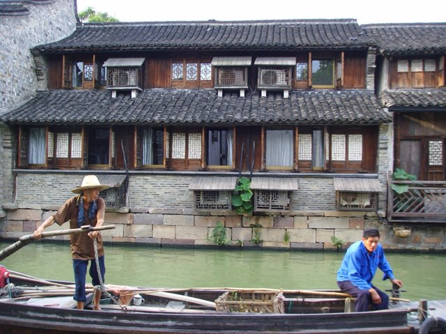
Wuzhen
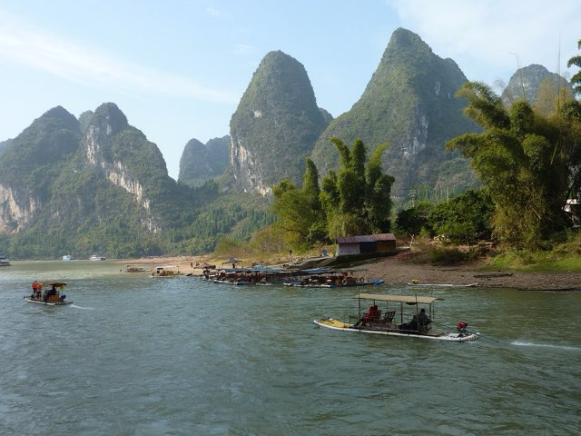
Guilin
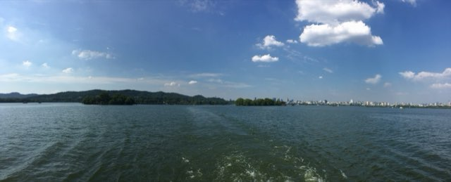
Hangzhou
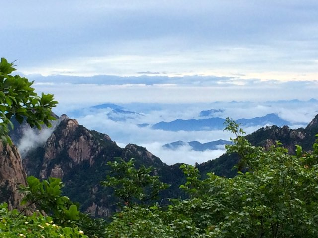
Huangshan
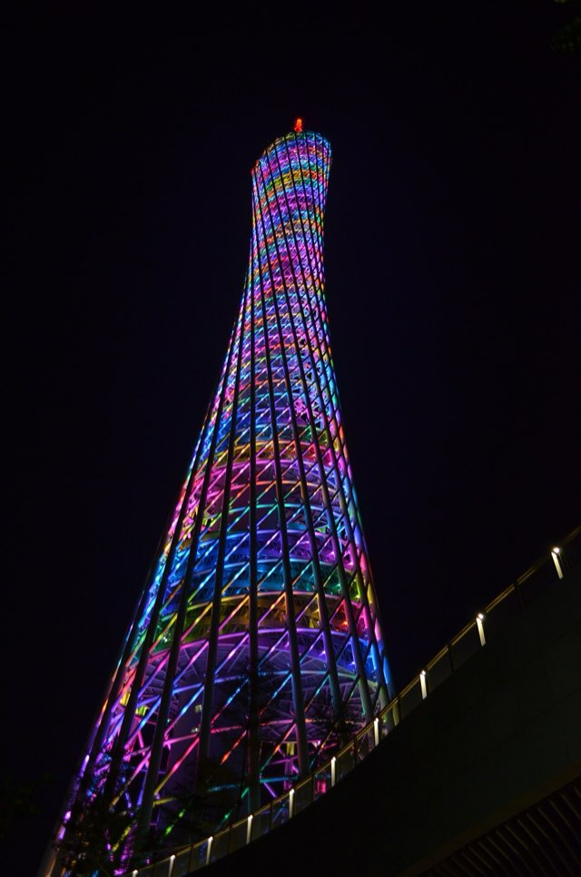
Guangzhou
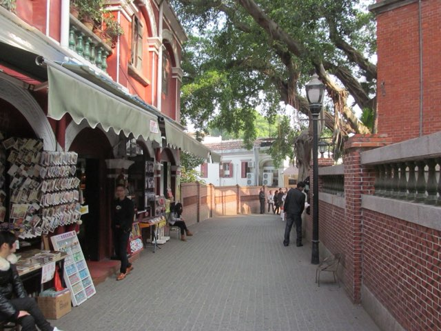
Xiamen
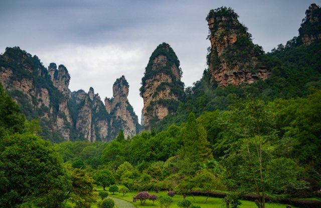
Zhangjiajie
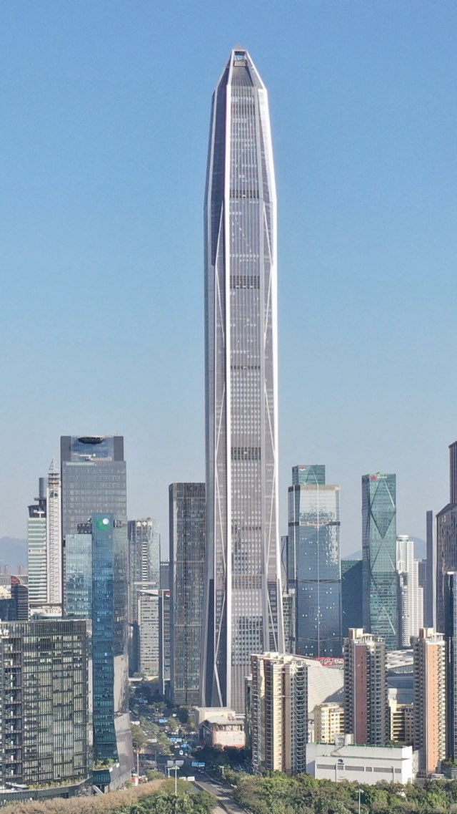
Shenzhen
LTourist visa
Trip assumption: every traveler holds a valid U.S. passport and a valid Chinese tourist visa covering the entire trip. The practical job is keeping every reservation consistent.
Use the passport name exactly—same order and spelling—on flights, 12306 rail, hotels and attraction tickets.
Carry the original passport on every rail day and for passport-linked attractions; a photo is not a substitute.
Hong Kong is outside mainland immigration. A route that goes mainland → Hong Kong → mainland uses another visa entry; confirm the visa has one available before booking.
Hotels normally register guests. For private accommodation, complete local registration within 24 hours.
Recommendation board · no route chosen yet
The decision has narrowed to Guangzhou versus Chongqing.
Lower hassle · Finalist L Shanghai → Guangzhou → Shenzhen → Hong Kong. Four bases, one flight day, then short rail moves.
More electric · Finalist X Shanghai → Chongqing → Shenzhen → Hong Kong. Four bases and two flight days for hotpot and the vertical-city nightscape.
Shared improvement Both start in Shanghai for jet-lag recovery, give Shenzhen two nights and finish in Hong Kong.
Still recommendations Nothing is selected or booked. The original seven routes remain useful alternatives, not discarded work.
00
The Shanghai-first shortlist
Why four bases now lead: Shanghai provides a forgiving arrival base, dropping Wuzhen removes a hotel move, Shenzhen adds the new-China museum and architecture day, and Hong Kong becomes the energetic finale with the strongest international exit options. Wuzhen remains an optional one-night swap, not a required stop.
Flight math: “6–7 hours” means the whole hotel-to-hotel transfer—not six hours airborne. Allow roughly 1–1½ hr to the airport, a 2 hr airport buffer, 2¼–3¼ hr in the air for these live options, then bags and the next hotel.
Finalist L · leading recommendationLower hassle
Canton, design + harbours
Shanghai 4 → Guangzhou 3 → Shenzhen 2 → Hong Kong 4
The food-and-future route: classic Shanghai, three Cantonese nights, a real Shenzhen stop and a generous Hong Kong finish—with only four hotels.
13 nights4 bases1 flight2 rail moveslower effort
Open the 15-day plan ↓
Transfer reality: The live Nov 10 SHA → CAN option is 2 hr 25 min in the air; protect roughly 5½–6½ hours hotel to hotel. Guangzhou → Shenzhen and Shenzhen → Hong Kong are much easier rail moves.
Transfer reality: The live Nov 10 SHA → CKG flight is 3 hr 10 min and the Nov 13 CKG → SZX flight is 2 hr 15 min. Each still consumes roughly 5–6½ hours hotel to hotel. Dropping Wuzhen removes one hotel change but not Chongqing’s second airport day.
PVG arrival, Xintiandi check-in and easy neighborhood dinner
SHA
Day 3
Shanghai
Pudong skyline + Shanghai Museum East
SHA
Day 4
Shanghai
French Concession, Old City and Bund night
SHA
Day 5
Shanghai
Free choice: Zhujiajiao day trip, art district, shopping or a true recovery day
SHA
Day 6
→ Chongqing
SHA/PVG → CKG; reserve the full 5½–7 hr hotel-to-hotel transfer
CQ
Day 7
Chongqing
Yuzhong stair walk, Yangtze cableway, Hongya Cave and hotpot
CQ
Day 8
Chongqing
Ciqikou early, xiaomian, skyline viewpoints and hot-spring reset
CQ
Day 9
→ Shenzhen
CKG → SZX; keep the 5½–7 hr hotel-to-hotel day reservation-free
SZ
Day 10
Shenzhen
Choose one museum district; add Talent Park, OCT-LOFT or a spa—not all three
SZ
Day 11
→ Hong Kong
Futian → West Kowloon; allow 2½–3 hr hotel to hotel
HK
Day 12
Hong Kong
Central, Peak + Lugard Road and Star Ferry at blue hour
HK
Day 13
Hong Kong
Dragon’s Back and Big Wave Bay, with weather backup at M+
HK
Day 14
Hong Kong
Lamma, Lantau or Cheung Chau—or a genuine unplanned recovery day
HK
Day 15
In flight
HKG departure; connect onward to AUS
—
Why Shenzhen gets two nightsOne night is only a transfer. Two nights create one complete day for a geographically coherent museum, design, skyline or spa plan.
Choose Guangzhou ifThe group values fewer airport days, Cantonese food and a smoother train-based finish more than novelty.
Choose Chongqing ifHotpot and one of China’s most dramatic night cities are worth spending a second day in airports.
Want Wuzhen anyway?Make it an optional one-night swap from Shanghai. It adds a fifth hotel; it is no longer baked into either leading route.
Real inventory · planning snapshot
What the November routes cost right now
Live comparison for one adult in economy using the working Thu Nov 5 → Thu Nov 19, 2026 window. Couple totals assume two seats remain in the same fare bucket. These are recommendations, not bookings; re-run every fare before paying.
Checked Jul 15, 2026
Best-value open jaw · Delta
$1,283per person · $2,566 couple
AUS 7:10 AM → PVG 5:25 PM Friday DL2438 to LAX, 2 hr 48 min connection, then DL39 · 20 hr 15 min total
HKG 10:55 AM → AUS 3:42 PM DL88 to LAX, 2 hr 30 min connection, then DL986 · 18 hr 47 min total
Finalist L · Guangzhou
1 flight + 2 rail
Delta open jaw$2,566
Spring SHA → CAN · Nov 10 · 7:25–9:50 AM$154
Guangzhou → Shenzhen HSR~$22
Futian → West Kowloon HSR~$20
One Spring checked bag each$50–90
Couple · ticketed transport$2,812–2,852
Allow another $60–100 per couple for shared airport/station rides. Realistic transport planning total: $2,872–3,000, before any Delta Basic checked-bag charge.
Finalist X · Chongqing
2 flights + 1 rail
Delta open jaw$2,566
Spring SHA → CKG · Nov 10 · 7:50–11:00 AM$160
Spring CKG → SZX · Nov 13 · 9:55 AM–12:10 PM$196
Futian → West Kowloon HSR~$20
Two Spring checked bags each$100–180
Couple · ticketed transport$3,042–3,122
Allow another $100–160 per couple for shared airport rides. Realistic transport planning total: $3,142–3,300, before any Delta Basic checked-bag charge.
The real Chongqing premiumAbout $230–270 per couple in tickets and domestic bags, plus the extra airport rides—and roughly 5–7 more trip hours.
Spring baggage is not optional mathSpringSaver has no free checked bag and only a 7 kg, 20 × 30 × 40 cm carry-on. Buy baggage online; airport rates are charged in 5 kg blocks.
Delta fare family still mattersThe Google result did not expose the final Basic/Main baggage allowance. Compare the upgrade against baggage and seat-selection charges at checkout.
These remain complete alternatives, but they are now secondary to the two Shanghai-first finalists above. Nothing is selected or booked; every fall flight and train remains provisional until its exact timetable is live.
02
Walkable hotel bases
These are shortlists, not reservations: neighborhood first, then a representative hotel with food, sights and transit outside the door. Use the route buttons to hide cities that are irrelevant. Exact rooms, deposits and registration checks wait until the group chooses a route.
Card title = leading recommendationText links = useful alternativesFinal property comes later
Show route
Hong Kong · Central
The Pottinger
best location
Best for Peak, Central, ferries and restaurant nights on foot. Central MTR Exit D2 is nearby. Choose Eaton in Jordan if West Kowloon rail and local food matter more than Central.
Walkable dining and lanes with multiple metro lines; Xintiandi Station Exit 6 is steps away. It is a better all-trip base than a Bund hotel that forces more taxi rides.
Better all-around base for Beijing Road, food and metro access than an isolated luxury tower. White Swan is the atmospheric Shamian alternative, but it is less convenient city-wide.
Inside the scenic zone, with centralized check-in and luggage handling. The four-base finalists skip Wuzhen; use this only if the group deliberately accepts a fifth hotel for the quiet evening and early morning.
Xihai suits the western summit loop; Baiyun suits Bright Summit. After descending and visiting Hongcun, sleep in Tunxi rather than an unverified rural guesthouse to simplify the Shenzhen train.
Walkable to Zhongshan Road and the waterfront, with metro access. Ask the concierge to verify the correct foreign-tourist Gulangyu ferry terminal and ticket procedure.
Near Futian’s malls, metro and cross-border HSR. The finalists give Shenzhen two nights: arrival evening plus one complete day for a coherent Futian, Nanshan, Guangming or Pingshan plan.
Pullman is about a ten-minute walk from the forest-park entrance. Move to Hampton opposite the Tianmen cableway before the flight; this hotel change removes more hassle than it creates.
A full-service riverfront candidate about a 15-minute walk from West Street: close enough for dinner without sleeping in the loudest blocks. River View Hotel is the smaller, better-value candidate two minutes from West Street.
We're flexible across Oct–Nov. Two collisions in the baseline window, and November's weather is actually better — the research points one way.
Collision #1 — Canton Fair
Official Autumn 2026 phases: Oct 15–19 · Oct 23–27 · Oct 31–Nov 4. Guangzhou hotels tighten sharply during every phase. A Nov 5 start puts Finalist L in Guangzhou after the fair; do not slide it earlier without repricing.
Collision #2 — HK trade-fair season
Mid-Oct through early Nov is Hong Kong's high hotel corridor (Electronics, Optical, Wine fairs). Late Nov is noticeably cheaper for the same rooms.
Calendar trap — adjusted workweek
Mainland National Day holiday is Oct 1–7, but Saturday Oct 10 is an adjusted working day. Hong Kong observes a Chung Yeung substitute holiday on Monday Oct 19. The baseline therefore carries crowd and hours distortions in both systems. mainland calendar ↗ · HK calendar ↗
Sleeper is now an option, not a visa workaround. With tourist visas assumed, the Hong Kong–Shanghai sleeper can save a hotel night if its fall schedule, passport booking and berth layout work for the group. It does not fix a rushed route, and any later return to the mainland would consume another visa entry. seat61's guide ↗ · MTR booking ↗
November is the lower-hassle choice: cooler walking weather, much less rain in Hong Kong and no Canton Fair after Nov 4. Tropical cyclones are less likely than October but not impossible; mountain visibility and cable cars remain weather-dependent. Pack real layers—summit conditions can be near freezing.
Recommended windows
Finalists L / X
Thu Nov 5 → Thu Nov 19 Shanghai arrival · Guangzhou fully post-fair · cooler walking · Hong Kong finish · home before Thanksgiving week
Routes A / B / F / G
The same Nov 5–19 comparison window remains the cleanest starting point.
Route C / E
Thu Oct 29 → Thu Nov 12 Huangshan / Zhangjiajie land Nov 2–5: foliage, cooler trails and stronger mountain atmosphere
Tune-up
Price Tuesday and Thursday departures. If Wuzhen is added back as a one-night swap, favor a weekday stay; otherwise preserve the four-base plan and use the extra night in Shanghai or Hong Kong.
Avoid returning in Thanksgiving week, but do not assume fares are equal: price each open-jaw pattern live before choosing the window. Nov 5–19 is the cleanest shared comparison window; exact attraction closed-days must be re-run after the route is chosen.
04
Decision matrix
The matrix keeps the seven earlier routes comparable. The picker below separately reads the same priorities against the two four-base finalists, including hotel-change ease, flight-day tolerance and interest in Shenzhen’s future-city museums.
Swipe the matrix sideways ↔
05
Route picker
Everyone in the group: tap what matters most to you (up to 3). The first result chooses between the Guangzhou and Chongqing finalists; the rows underneath retain the best matches from the original seven.
What do you care about most?
Nothing selected = overall totals. Scores come straight from the decision matrix above.
06
The city playbook
The vacation layer: the must-do icons, active days, big-view meals and drinks, destination spas, water experiences, and day trips that are easy to miss when we only compare routes. Every activity title is clickable; trail cards open AllTrails and the rest open a focused Google Maps search.
Instagram reality check. Save these now, but re-check hours, reservation channels, weather closures, and foreign-guest rules 2–4 weeks before the trip. Mainland venues often move booking into WeChat or Alipay.
Showing all 11 city guides.
Museum radar — the new China
researched · July 2026
Shenzhen and Shanghai are in a museum-building arms race. These are the genuinely trip-worthy openings and major renewals—not a generic list of every city museum. “Watch” means the venue is scheduled to open before our fall window but needs a final confirmation.
07
Eat here — the foodie file
This is the actual dinner shortlist—not a trophy list. Every card answers four useful questions: why spend a meal here, what to order, what it costs, and how hard it is to book.
Do not overbook the trip. Pick one destination dinner in Hong Kong and one on the mainland. Keep the other nights open for roast meat, noodles, dumplings, markets and whatever looks busy.
Contemporary CantoneseSet-menu splurgeBest for the whole group
The one meal worth planning the calendar around: ingredient-led Cantonese cooking from small suppliers and local fishermen, with a menu that changes by season. It topped Asia's 50 Best in 2021 and remains the most difficult reservation on this list.
Order thisSteamed flowery crab with aged Shaoxing wine, chicken oil and flat rice noodles; add thick-cut char siu if it appears on the menu.
Booking realityReserve only through the official site when a release opens. The restaurant emails set-menu choices shortly before the meal; some whole-seafood dishes need a larger party.
The polished dim-sum lunch: harbour-side Four Seasons service without committing the evening. It is the safest high-end Hong Kong fallback if The Chairman does not happen.
Order thisPineapple pork buns with pine nuts, whole-abalone puffs and the fish-maw casserole; the weekday lunch menu is the most approachable way in.
Booking realityTarget 30 days ahead. Minimum spend is HKD 700 + 10% per adult; tasting menus currently start at HKD 2,780.
A serious two-star kitchen in Central with much more flexibility than the headline tables: seasonal menus, dim sum, à la carte, tasting and vegetarian options all live under one roof.
Choose it whenThe group wants a dress-up Cantonese meal without building the itinerary around a reservation drop. Lunch works especially well between Central sights.
Booking realityStart checking 1–2 weeks out and use the restaurant's own reservation link. Open daily for lunch and dinner in the Nexxus Building.
A tiny, opulent Cantonese dining room inside the Langham. Choose it for precise wok cooking and a quiet formal meal—not because Shanghai lacks excellent local food.
Order thisThree-onion Australian lobster, salted-egg-yolk frog leg, or the black-bean abalone and geoduck built around proper wok hei.
Booking realityEmail or call 1–2 weeks ahead and provide a local or hotel number. Tables are held only 15 minutes, so do not schedule it after a tight day trip.
This is the Shanghai-specific choice: sophisticated local cooking inside a preserved townhouse with 16 traditionally furnished rooms. It feels like old Shanghai rather than an international hotel restaurant.
Order thisMade-to-order river shrimp, sweet-glazed smoked mackerel belly and the cashew-praline puff. Ask the restaurant to help balance the order for the table.
Booking realityCall direct 1–2 weeks ahead, especially for a group private room. Address: 375 Zhenning Road; phone +86 21 5239 7878.
The Guangzhou splurge, focused on polished regional Cantonese cooking rather than spectacle. The original 71st-floor room is being enhanced and is scheduled to return in September.
Order thisPrawn dumplings with bamboo shoots, crispy chicken and roasted Magang goose; add seasonal seafood only after confirming the market price.
Booking realityBook 1–2 weeks ahead and reconfirm the dining-room location for fall. During renovation the restaurant is temporarily on the podium's second floor.
The non-Chinese wildcard: Paul Pairet's lively brasserie pairs a real Bund-night-out atmosphere with floor-to-ceiling Pudong views. Pick it for the room and the group energy, not for Michelin collecting.
Order thisShare a chilled seafood platter, something from the grill and the sorbet-filled lemon tart. Weekday lunch is the value move; dinner is the view move.
Booking realityReserve 3–7 days ahead and request a window or terrace table—it is a request, not a guarantee. Weekend three-course brunch currently starts at RMB 420.
Kam's or Yat LokRoast goose with crisp skin; go off-peak and accept a shared table.
Tim Ho WanBaked char-siu buns and a fast dim-sum hit—do not build a whole afternoon around it.
Mak's NoodleSmall wonton-noodle bowls made for stacking with another nearby stop.
Strategy · one progressive lunch beats three separate queues
Shanghai
Jia Jia Tang BaoPork-and-crab xiaolongbao; arrive near opening because popular fillings sell out.
Lai Lai Xiao LongCrab-roe xiaolongbao and a useful backup when the famous queue is unreasonable.
Scallion-oil noodlesAdd a neighborhood noodle shop so the city is not reduced to soup dumplings.
Strategy · Huanghe Road early, then coffee or People's Square
Chongqing · Finalist X / Route G
Zhao Er HotpotClassic old-school hotpot; duck blood, fresh tripe and lotus root are the point.
Nine-grid hotpotChoose a busy local room and order 微辣—“mild” is still properly hot.
XiaomianSpicy breakfast noodles, eaten standing or on a plastic stool, for roughly pocket change.
Strategy · ask the hotel to reserve hotpot; breakfast is spontaneous
Guangzhou + Yangshuo
Taotaoju or PanxiMorning tea with har gow, siu mai, steamed ribs and enough time for multiple rounds.
Beer fishYangshuo's signature; confirm the fish and price by weight before it hits the wok.
Guilin mifenRice noodles with braised meat, peanuts and pickles—best as a fast breakfast.
Strategy · dim sum is a two-hour event; noodles are a 20-minute meal
08
Our take
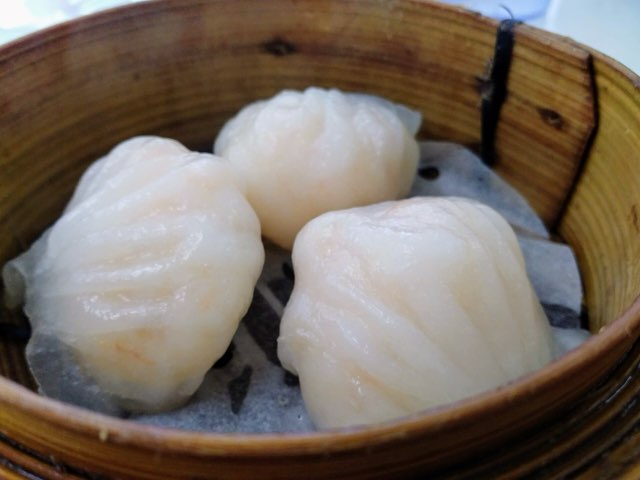
Finalist L
The leading low-friction option
Shanghai → Guangzhou → Shenzhen → Hong Kong. Four hotels, one internal flight and two easy rail moves preserve Cantonese depth without turning the trip into a packing exercise.
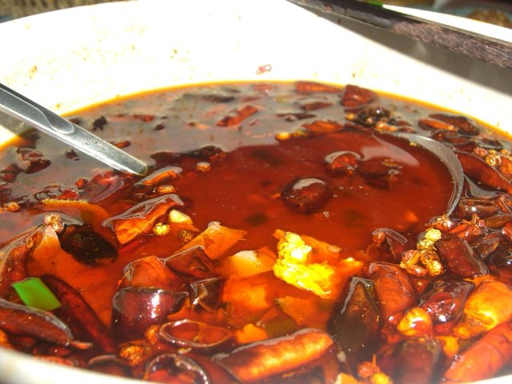
Finalist X
The high-energy foodie pick
Shanghai → Chongqing → Shenzhen → Hong Kong. The four-base version keeps the hotpot and vertical-city nightscape while removing Wuzhen’s extra hotel move; Chongqing still costs one additional airport day.
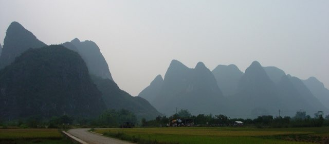
Route F
Tops the matrix
Li River karst with zero internal flights and six Hong Kong nights. The corrected route uses Guilin as the one-way cruise start, then gives Yangshuo three nights without backtracking.
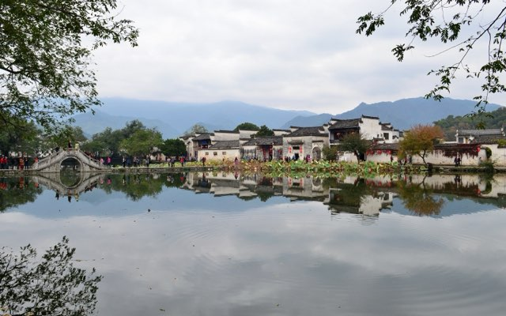
Route C
Mountains & lake, fewer trains
The dedicated mountain route: Shanghai and Hangzhou lead into a summit sunrise, Hongcun and Tunxi. It is the “landscape painting” version, but not the easy one.
Route E
Kaylee's Avatar peaks
Zhangjiajie looks like nowhere else. Two internal flights are the cost. Compare with Route F first — it gets a cousin of this landscape by rail.
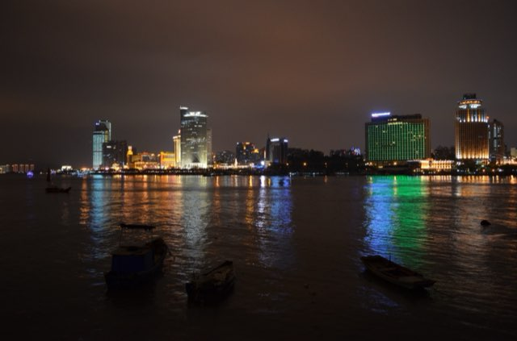
Route B
The coast + tea pick
The corrected version drops Huangshan instead of racing through both mountain and coast. Hangzhou gets two nights, Xiamen gets three, and every heavy rail day is followed by recovery time.
09
Booking + operating plan
No ticket-release day is treated as confirmed until the official fall inventory is live. Use this as a dependency order, not permission to make non-refundable purchases.
Red edge = decide before hotelsGold edge = reserve earlyNo edge = wait for the normal release
When
Reservation / dependency
Action
Fallback / cancellation check
Decision phase
Route + approximate Nov window
Compare the two four-base finalists first; use the seven earlier routes only if the group wants a different pace or landscape.
Do not collect booking data or reserve nine speculative versions.
Before airfare
Open-jaw international flights
Verify airport, terminal, arrival date and every passport name. Favor changeable fares.
Price AUS→PVG/SHA and HKG→AUS first; compare the reverse direction only if it saves enough to justify the less-forgiving arrival order.
Before non-refundable hotels
Finalist flights: SHA/PVG→CAN for L; SHA/PVG→CKG + CKG→SZX for X. Earlier-route flights remain secondary.
Confirm the required operating day, airport and nonstop status. Treat each as a 5½–7 hr hotel-to-hotel block, not merely the airborne time.
If CKG→SZX is poor, choose Finalist L rather than forcing a connection into X.
As soon as route is chosen
Walkable hotels
Book refundable direct; send all guest names; ask about early luggage, deposit and foreign-passport registration.
Record free-cancel date and hotel phone in both English and Chinese.
2+ months
Huangshan summit / Wuzhen inside Xizha
Lock refundable Xihai/Baiyun or Waterside inventory.
Mountain: lowland Tunxi plan. Wuzhen: skip stop rather than stay outside.
Official release
Huangshan, Zhangjiajie, Gulangyu, special exhibitions
Use passport identity; have hotel concierge verify the official channel and correct entrance/terminal.
Exact fall release windows remain unverified; never buy from an impersonator.
15 days before each train
Mainland rail / cross-border HSR
12306 or MTR; exact station, train number, class and passport. Keep travelers on one order when practical.
Save later train and refundable hotel options; note refund/change cutoff.
Quarterly / 30 days / 1–2 weeks
The Chairman / hotel dining / flexible restaurants
Follow each official channel; put hard dinner only after an easy day.
Keep one walk-in list per neighborhood.
7 days
Weather-dependent decks, cable cars, hikes and boats
Check forecast, maintenance and closure notices; buy late where possible.
Use the indoor backup already assigned to that city.
Screenshot and print the corrected version; delete stale versions.
Attraction gate checks
Shanghai Museum East
Confirmed: open Wednesday–Monday 10:00–18:00, last entry 17:00; closed Tuesday. Individual general admission currently needs no reservation, but the original passport and security screening are required. Some digital galleries and special exhibitions use separate WeChat reservations.
Confirmed: currently 09:00–17:00, last entry 16:00; closed Monday. Individual general entry currently needs no reservation. Do not schedule this and East on the same day merely because both say “Shanghai Museum.”
Confirmed: M+ is generally Tuesday–Sunday and closed Monday; last entry is 30 minutes before closing. HKPM is closed Tuesday and timed booking is recommended. Weather warnings can alter access. Group them in West Kowloon, not with Central.
Confirmed: Peak Tram currently runs daily with potentially long queues; prebook and go early. Ngong Ping is weather/maintenance dependent and typically 10:00–18:00. These are separate half/full-day anchors, not filler between dinners.
Confirmed framework: real-name directional reservations, identity matching and season-specific shuttle/cable-car hours apply. Weather can close routes. Tiandu Peak currently requires a separate reservation. Recheck the exact operating notice shortly before the trip.
Unverified: the current official English foreign-passport booking flow, release window and exact tourist terminal/entrance could not be independently confirmed. Use the hotel concierge plus the official Chinese mini-program; do not rely on an old blog or buy a non-refundable third-party ticket first.
Checked 10 Jul 2026 · remains a booking dependency
China apps, payment + connectivity
Payments
Set up both Alipay and WeChat Pay before departure; bind at least two unrelated Visa/Mastercard cards.
Tell banks the travel dates and enable app-based verification before leaving.
Carry physical cards plus RMB cash in two wallets. Foreign-card binding can still fail at the issuer or merchant.
Confirm hotel deposit method and release timing; keep credit headroom.
Transport + maps
12306 with passport verification; original passport on rail days.
DiDi Greater China with a foreign number/card; save hotel pins and Chinese pickup text.
Apple Maps and Amap/Gaode for mainland navigation; do not make Google Maps the only map.
Save exact station/airport terminal and allow for huge interchanges.
Data + authentication
Use international roaming or a mainland-capable eSIM with roaming breakout; test it before the first transfer.
Internet restrictions and service availability change. Do not rely on a VPN as the sole plan.
Keep the U.S. number able to receive bank/airline SMS; store recovery codes offline.
Download Chinese and Cantonese translation packs and all critical documents.
After the route is chosen
Turn only the winning route into a detailed booking tracker.
Then add confirmed hotel names, Chinese addresses, phones, map pins, entrances and metro exits.
Create driver screenshots only after properties and stations are final.
Until then, keep this page focused on recommendations and tradeoffs.
Meals + dietary safety
Save every restaurant’s Chinese name, address, phone, current service hours and reservation under the hotel neighborhood.
Write allergies in Chinese with “cannot eat / cross-contact” language; do not depend on spoken translation.
Never schedule the only available meal after a flight, mountain descent or cross-border train.
Carry a snack and water on rail/mountain days; confirm late-arrival food near each hotel.
Passport bio page, visa, insurance policy and emergency contacts.
Every flight, train and hotel confirmation; attraction QR/timed ticket.
Traveler-name master sheet and medication letter/prescriptions.
Chinese hotel/address cards, route overview and daily meeting point.
Two passport photos and a secure cloud copy accessible to a trusted person at home.
Pack for the actual route
Broken-in walking shoes; mountain route adds grippy trail shoes and a small overnight bag.
Light rain shell, compact umbrella and warm layers; summit wind can be near freezing even when cities are mild.
Power bank in carry-on with clearly printed capacity, charging cables and China-compatible plug setup.
Original-label medication, clinician letter for controlled/special medication, basic stomach/rehydration kit and masks for poor-air days.
Minimal luggage: stairs, cobbles, ferry ramps and giant stations punish large cases.
Weather, health, accessibility, law + safety
October/November weather
November is generally drier in Hong Kong, but tropical cyclones can occur through November. Mountains add fog, wind, wet stairs and early darkness. Put outdoor icons in the morning and keep one indoor swap.
Dragon’s Back, Huangshan and Zhangjiajie are not equivalent “walks.” Huangshan includes steep stone stairs and altitude around 1,800 m. Anyone with mobility or knee limits gets a cable-car/short-loop version.
Checked 10 Jul 2026 · route-specific official operations
Medical + food
See a travel clinician at least a month before departure; review routine vaccines and route-specific needs. Use sealed water, choose busy restaurants, declare allergies in written Chinese and carry insurance with evacuation/remote-mountain coverage.
Assume surveillance. Do not photograph military/police/security facilities, fly a drone without current local authorization, or conduct activity that could look like journalism, research, political organizing or paid work. Minimize sensitive data on devices.
Do not sprint through an unfamiliar mega-station. Use 12306/MTR staff, change the ticket if eligible, message the hotel, cancel the timed attraction and take the next same-route train. Never accept an unlicensed “helper.”
Closure / severe weather
Keep the refundable hotel, move the mountain or boat to the next morning, and use the city’s museum/spa/food-market backup. Do not force exposed hikes, ferries or cable cars in warnings.
Lost internet / payment failure
Switch between roaming/eSIM and hotel Wi-Fi; use printed Chinese addresses and RMB cash. Try the second traveler’s app/card. Return to the hotel desk—do not keep moving farther from the base.
Lost phone
Remote-lock it, move payment accounts to the backup phone, call the carrier, change primary passwords and use printed tickets. Keep one phone out of the same bag as the other.
Lost passport
Report to local police, contact the nearest U.S. embassy/consulate, retrieve the secure copy and passport photos, then contact airlines/12306/hotels to repair identity-linked bookings. Do not attempt a border crossing.
Illness / injury
Call the insurer first when possible; hotel staff can identify an appropriate hospital. Mainland: police 110, ambulance 120, fire 119. Hong Kong: 999. U.S. emergency assistance in China: +86 10 8531 4000.
Working budget · live flights plus planning ranges
International flights: $2,566 / couple in the Jul 15 live snapshot; protect up to $3,000
13 hotel nights: $2,600–5,200
Finalist L internal air + rail + domestic bags: $246–286 / couple
Finalist X internal air + rail + domestic bags: $476–556 / couple
Food: $1,400–2,600
Attractions, tours, local transport: $800–1,800
Insurance, data, misc: $400–800
Contingency: add 15%
$9–18krealistic planning band per couple, excluding shopping · the live transport snapshot now anchors the low end · luxury hotels, tours and splurge meals create most of the remaining spread · reprice before booking
Recheck before paying
Fall 2026 internal-flight operating days and terminals; exact mainland train times before schedules release; Gulangyu and Zhangjiajie passport-booking flows; foreign-guest confirmation for whichever hotels make the final shortlist; live hotel prices, deposits and cancellation terms; special-exhibition tickets; final restaurant hours; weather, air quality, events and temporary closures.
10
Bookmarks
The links we keep reaching for — official rules, booking channels, and the blogs worth reading before we go.